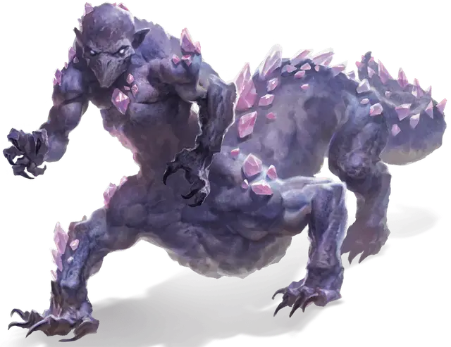

Самоцветный охотник
Gem Stalker
Большой Монстр, нейтральный

Класс Доспеха 17 (природный доспех)
Хиты 67 (9к10 + 18)
Скорость 40 футов, лазая 40 футов
| мод | спас | ||
|---|---|---|---|
| СИЛ | 17 | +3 | +3 |
| ЛОВ | 15 | +2 | +5 |
| ТЕЛ | 14 | +2 | +2 |
| мод | спас | ||
|---|---|---|---|
| ИНТ | 15 | +2 | +5 |
| МДР | 10 | +0 | +0 |
| ХАР | 6 | −2 | −2 |
Навыки Восприятие +3, Скрытность +5
Сопротивление урону психическая энергия
Чувства тёмное зрение 120 футов, пассивное Восприятие 13
Языки понимает Драконий, но не говорит, Телепатия 60 фт.
Опасность 5 (1800 опыта)
Бонус мастерства +3
Особенности
Паучье лазание. Самоцветный охотник может лазать по сложным поверхностям, включая потолки, без совершения проверок характеристик.
Необычная природа. Самоцветному охотнику не требуются пища или вода.
Действия
Мультиатака. Самоцветный охотник совершает четыре атаки Когтем.
Коготь. . Рукопашная атака оружием: +6 к попаданию, досягаемость 5 фт., одна цель. Попадание: 10 (2к6+3) рубящего урона.
Бонусные действия
Кристаллический дротик. Дальнобойная атака заклинанием: +5 к попаданию, дальность 30 фт., одна цель. Попадание: 7 (1к10+2) урона силовым полем, и возникает один из следующих эффектов, определяемых видом дракона, создавшего самоцветного охотника:
• Аметист. Самоцветный охотник может телепортироваться в свободное пространство, которое он может видеть в пределах 30 фт.
• Кристалл. Самоцветный охотник получает количество временных хитов, равное нанесенному урону.
• Изумруд. Цель должна бросить 1к4 и вычесть выпавшее значение из следующего броска атаки, который она совершит до начала следующего хода самоцветного охотник.
• Сапфир. Цель должна успешно пройти спасбросок Силы Сл 13, иначе будет отброшена на расстояние до 10 фт. от самоцветного охотника и становится сбитой с ног.
• Топаз. Цель должна успешно пройти спасбросок Телосложения Сл 13, иначе станет отравленной до начала следующего хода самоцветного охотника.
Реакции
Защитная связь. Когда другое существо, которое самоцветный охотник видит в пределах 30 фт., собирается нанести урон, самоцветный охотник уменьшает этот урон на 10 (3к6). После чего самоцветный охотник получает урон, равный значению на которое он его уменьшил.
Описание
Когда самоцветный дракон убивает аберрантное существо из Дальнего Предела, дракон иногда превращает труп пришельца в самоцветного охотника— хитрого хищника, способного пересекать Подземье, охотиться на аберраций и охранять логово своего создателя. Самоцветный охотник наполнен жизнью, разумом и целеустремленностью благодаря мистической энергии дыхания самоцветного дракона, и он предан своей миссии.
У самоцветного охотника есть четвероногое тело, напоминающее тело бескрылого дракона, но со смутно похожим на человеческий торсом, головой и руками вместо головы дракона. Его глаза молочно-белые, у него нет рта, а кожа усыпана яркими кристаллами, которые пульсируют психической энергией. Эти кристаллы позволяют самоцветному охотнику использовать телепатию, а также способность метать хрустальные дротики и создавать защитную связь, которая может защитить других существ от вреда.